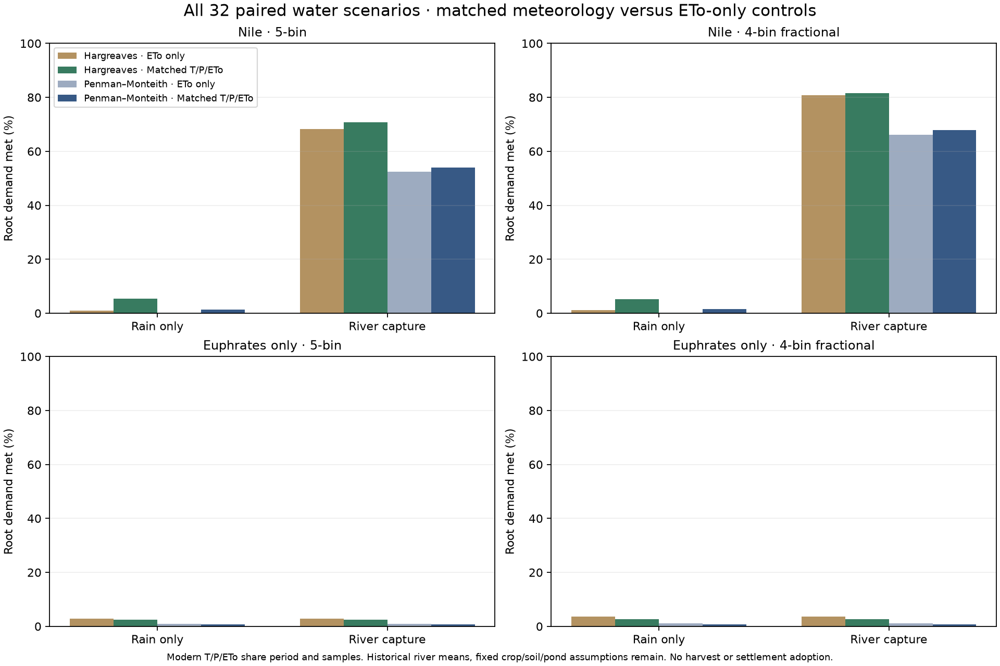
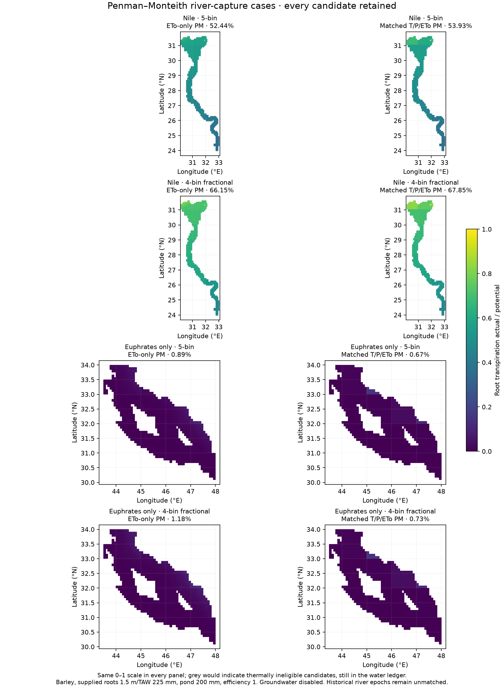

EARTH EVIDENCE · 14 NOVEMBER 2026
Temperature, rain and evaporation now share a weather period
All 32 paired scenarios and 1,507 candidate fields are retained. The matched inputs modestly raise Nile root-water coverage in the fixed members. These are conditional water maps; historical river epochs, local crop/soil assumptions and Earth harvest calibration remain unresolved. No settlement update is adopted.
The paired water result
With Penman–Monteith demand and river capture, Nile root-demand coverage changes from 52.44% to 53.93% in the five-bin crop and from 66.15% to 67.85% in the shorter supplied crop. Hargreaves changes from 68.27% to 70.83% and from 80.82% to 81.52%. No member or crop season is selected as a calibrated answer.

Root demand met means actual/potential root transpiration. It is not total-crop ET, grain yield, cultivated area or population. All cases use the same 0–100% scale.
These maps show the eight PM capture cases with one shared 0–1 legend. All Hargreaves and rain-only cases remain in the figure, table and downloads. Every candidate is a water consumer. Thermal eligibility is recomputed from the declared temperature choice; all candidates happen to remain eligible here.Euphrates-only PM coverage changes from 0.89% to 0.67% and from 1.18% to 0.73%, despite higher annual rain. Annual rain alone does not determine seasonal root supply. The Tigris is absent, so this is not total Mesopotamian water adequacy or a regional non-inflation validation.
All cases, including exact controls
Barley, supplied 1.5 m roots/TAW 225 mm, bare coefficient 0.15, pond 200 mm, infiltration 20 mm/day, efficiency 1 and the earlier crop/flood clocks remain fixed. Sixteen ETo-only controls reproduce every archived field/state/flux/basin array exactly. Groundwater is disabled. “≥95% root” is an unvalidated water diagnostic.
32 scenarios
| Region | Calendar | Access | Reference method | Meteorology | Root demand met | Eligible km² | ≥95% root km² | Delivered km³ | Cycles |
|---|
| Nile | 5-bin | Rain only | Hargreaves | Archived T/P + modern ETo | 1.04% | 24,497 | 0 | 0.000 | 2 |
| Nile | 5-bin | Rain only | Hargreaves | Matched modern T/P/ETo | 5.40% | 24,497 | 0 | 0.000 | 16 |
| Nile | 5-bin | Rain only | Penman–Monteith | Archived T/P + modern ETo | 0.13% | 24,497 | 0 | 0.000 | 2 |
| Nile | 5-bin | Rain only | Penman–Monteith | Matched modern T/P/ETo | 1.42% | 24,497 | 0 | 0.000 | 2 |
| Nile | 5-bin | Capture | Hargreaves | Archived T/P + modern ETo | 68.27% | 24,497 | 1,071 | 22.510 | 2 |
| Nile | 5-bin | Capture | Hargreaves | Matched modern T/P/ETo | 70.83% | 24,497 | 6,048 | 22.352 | 2 |
| Nile | 5-bin | Capture | Penman–Monteith | Archived T/P + modern ETo | 52.44% | 24,497 | 0 | 27.984 | 2 |
| Nile | 5-bin | Capture | Penman–Monteith | Matched modern T/P/ETo | 53.93% | 24,497 | 0 | 27.959 | 2 |
| Nile | 4-bin fractional | Rain only | Hargreaves | Archived T/P + modern ETo | 1.26% | 24,497 | 0 | 0.000 | 2 |
| Nile | 4-bin fractional | Rain only | Hargreaves | Matched modern T/P/ETo | 5.31% | 24,497 | 0 | 0.000 | 2 |
| Nile | 4-bin fractional | Rain only | Penman–Monteith | Archived T/P + modern ETo | 0.17% | 24,497 | 0 | 0.000 | 2 |
| Nile | 4-bin fractional | Rain only | Penman–Monteith | Matched modern T/P/ETo | 1.56% | 24,497 | 0 | 0.000 | 2 |
| Nile | 4-bin fractional | Capture | Hargreaves | Archived T/P + modern ETo | 80.82% | 24,497 | 6,048 | 23.026 | 2 |
| Nile | 4-bin fractional | Capture | Hargreaves | Matched modern T/P/ETo | 81.52% | 24,497 | 6,048 | 22.731 | 2 |
| Nile | 4-bin fractional | Capture | Penman–Monteith | Archived T/P + modern ETo | 66.15% | 24,497 | 0 | 28.530 | 2 |
| Nile | 4-bin fractional | Capture | Penman–Monteith | Matched modern T/P/ETo | 67.85% | 24,497 | 0 | 28.504 | 2 |
| Euphrates only | 5-bin | Rain only | Hargreaves | Archived T/P + modern ETo | 2.80% | 63,986 | 0 | 0.000 | 2 |
| Euphrates only | 5-bin | Rain only | Hargreaves | Matched modern T/P/ETo | 2.52% | 63,986 | 0 | 0.000 | 2 |
| Euphrates only | 5-bin | Rain only | Penman–Monteith | Archived T/P + modern ETo | 0.89% | 63,986 | 0 | 0.000 | 2 |
| Euphrates only | 5-bin | Rain only | Penman–Monteith | Matched modern T/P/ETo | 0.67% | 63,986 | 0 | 0.000 | 2 |
| Euphrates only | 5-bin | Capture | Hargreaves | Archived T/P + modern ETo | 2.80% | 63,986 | 0 | 0.595 | 2 |
| Euphrates only | 5-bin | Capture | Hargreaves | Matched modern T/P/ETo | 2.52% | 63,986 | 0 | 0.595 | 2 |
| Euphrates only | 5-bin | Capture | Penman–Monteith | Archived T/P + modern ETo | 0.89% | 63,986 | 0 | 0.595 | 2 |
| Euphrates only | 5-bin | Capture | Penman–Monteith | Matched modern T/P/ETo | 0.67% | 63,986 | 0 | 0.595 | 2 |
| Euphrates only | 4-bin fractional | Rain only | Hargreaves | Archived T/P + modern ETo | 3.61% | 63,986 | 0 | 0.000 | 2 |
| Euphrates only | 4-bin fractional | Rain only | Hargreaves | Matched modern T/P/ETo | 2.60% | 63,986 | 0 | 0.000 | 2 |
| Euphrates only | 4-bin fractional | Rain only | Penman–Monteith | Archived T/P + modern ETo | 1.18% | 63,986 | 0 | 0.000 | 2 |
| Euphrates only | 4-bin fractional | Rain only | Penman–Monteith | Matched modern T/P/ETo | 0.73% | 63,986 | 0 | 0.000 | 2 |
| Euphrates only | 4-bin fractional | Capture | Hargreaves | Archived T/P + modern ETo | 3.61% | 63,986 | 0 | 0.595 | 2 |
| Euphrates only | 4-bin fractional | Capture | Hargreaves | Matched modern T/P/ETo | 2.60% | 63,986 | 0 | 0.595 | 2 |
| Euphrates only | 4-bin fractional | Capture | Penman–Monteith | Archived T/P + modern ETo | 1.18% | 63,986 | 0 | 0.595 | 2 |
| Euphrates only | 4-bin fractional | Capture | Penman–Monteith | Matched modern T/P/ETo | 0.73% | 63,986 | 0 | 0.595 | 2 |
What matching resolves, and what it leaves open
All 30 fixed samples have complete 2020–2024LST temperature, rainfall and evaporation inputs. All 438,480 overlapping weather values agree exactly with the earlier ETo packets. Rain amounts retain leap days and mean annual totals; monthly temperature means remain physical Celsius values. Modern five-year gridded inputs are not a long climatic normal, station validation or an ancient reconstruction. Monthly means omit daily extremes and interannual variation.
Area-weighted annual rain changes from 38.45 to 110.05 mm across Nile candidates and from 139.96 to 157.69 mm across Euphrates-only candidates. Period, source and sampling all change. Historical river supply still uses Aswan1871–1901 and selected Hit1965–1971 means, so climate/river epochs remain unmatched. Crop stages, basal versus soil demand, local roots/soils/canopy, drainage and water-table constraints remain unqualified.
Independent checks and complete downloads
Input review checks all raw weather overlap, date/unit/domain and 50-digit Decimal aggregation, 360 sample bins, all assignments and CSV cells. Field review independently replays 9,114,336 final-cycle field-steps, every annual field state/flux, monthly basin flow, daily basin stock and all 24,112 CSV rows. All 32 cases converge within 2–16 repeated cycles. Seven fresh input/field files reproduce byte for byte; all 952 protected files remain unchanged.
Declared field comparison · Declared input preflight · Weather/coverage facts · Independent input review · All 32 results · Independent field replay · All meteorological arrays · All 360 sample bins (CSV) · All 54,810 daily rows (gzip CSV) · All field states/fluxes and ledgers · All 24,112 field rows (gzip CSV) · All frozen raw weather and receipt (ZIP)
Next dependency
Qualify local phenology, basal demand and canopy/root development with consistent soil and drainage inputs before translating root-water coverage into harvest. Keep historical forcing/river compatibility, shared Earth/fantasy weather/flow, Tigris, independent regions and frozen harvest gates. The local groundwater source audit did not qualify regional capacities or fluxes.
Release-3 settlements and marketed share 0.3923 remain adopted; whole-empire Egypt calibration still fails. Food supply, residents and political authority do not follow from these water maps.